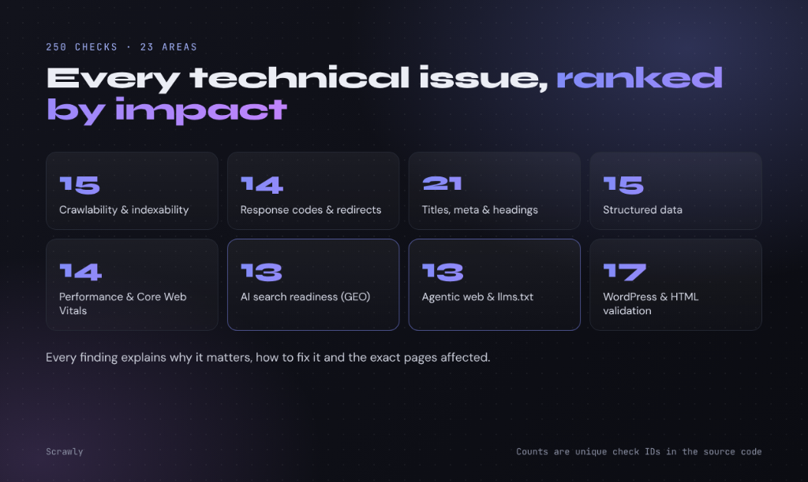
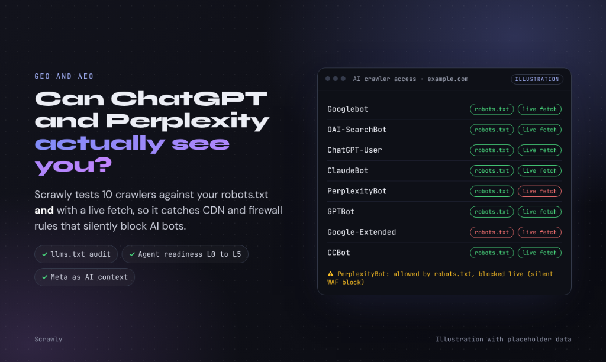
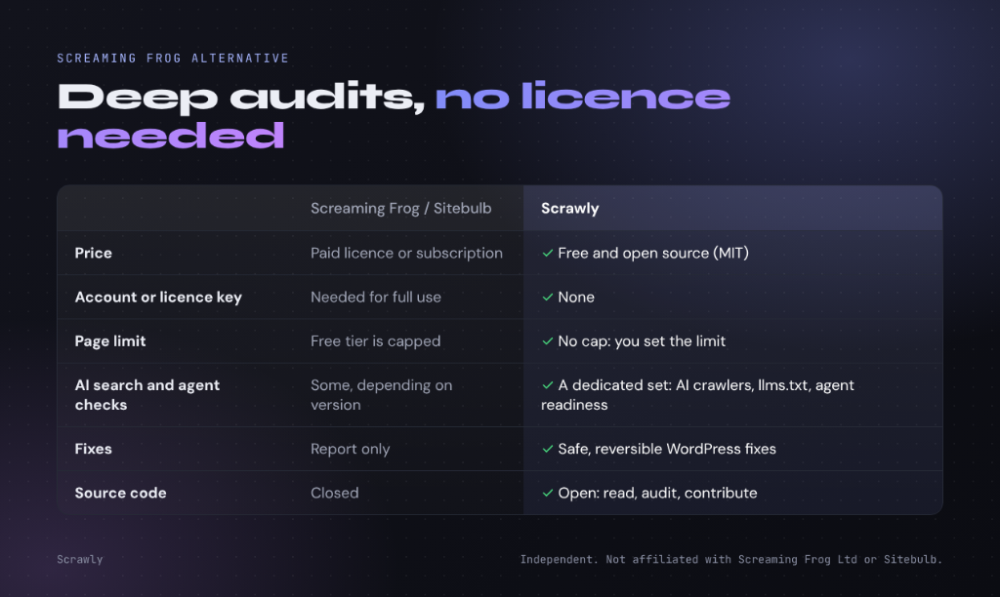
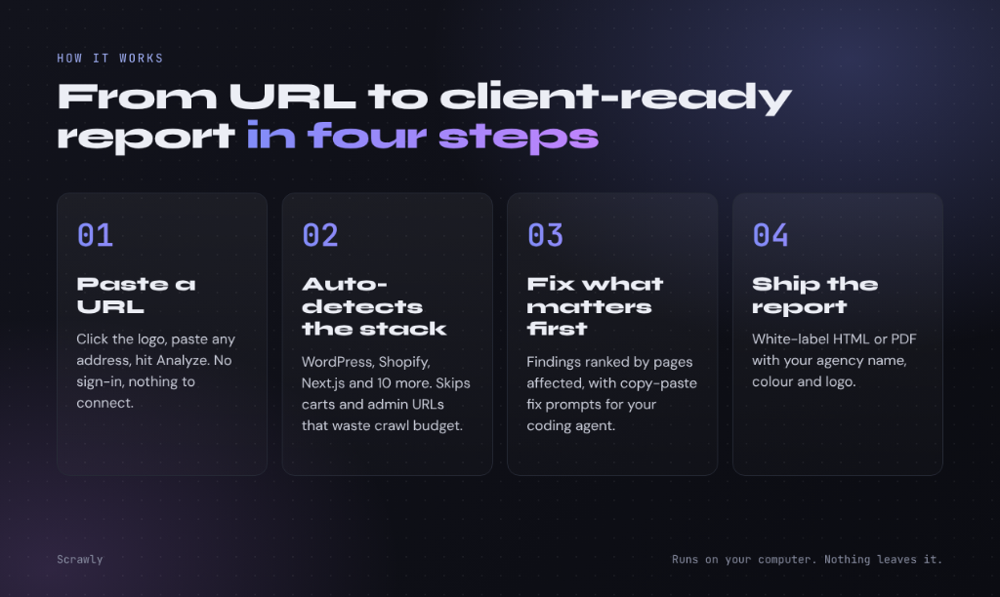

The free, open-source SEO crawler and site audit tool
Scrawly audits any website for the technical issues that affect Google rankings and AI-search visibility: 250 checks, plain-language fixes, and safe WordPress repairs. No account, no page cap, free forever.
curl -fsSL https://raw.githubusercontent.com/IliasSami/scrawly-seo-crawler/main/install.sh | bash
Paste into Terminal. Scrawly installs itself and appears in your Applications.
Or install by hand · MIT licensed · macOS, Windows, Linux · Official Portal: iliassami.com/scrawly
250 checks on every page
Each finding explains why it matters, how to fix it, and exactly which pages are affected.

Crawlability and indexing
robots.txt, meta robots, X-Robots-Tag, noindex conflicts, orphan pages, crawl depth.
Redirects and errors
4xx and 5xx pages, redirect chains and loops, temporary vs permanent redirects.
Titles, meta and headings
Pixel-width truncation, duplicates, descriptions too thin for AI, heading order.
Canonicals and duplicates
Missing or conflicting canonicals, duplicate and near-duplicate content.
Structured data
JSON-LD, Microdata and RDFa with schema validation.
Links and architecture
Internal link graph, internal PageRank, broken links, a 3D site map and depth tree.
Speed and Core Web Vitals
PageSpeed Insights lab and field data, TTFB, page weight.
And more
Images and alt text, hreflang, sitemaps, security and TLS, mobile, JavaScript rendering.
Built for AI search: GEO and AEO
AI answer engines read your pages and decide whether to cite you. Scrawly checks what they see.

AI crawler access
Which AI bots (GPTBot, ClaudeBot, PerplexityBot, Google-Extended and more) you allow or block.
llms.txt
Whether you publish a curated index for AI systems, and how good it is.
Meta as AI context
Flags descriptions too thin for AI and drafts entity-rich ones from the page itself.
Agent readiness
How well AI agents can read and use your site.
A free alternative to Screaming Frog and Sitebulb
Both are excellent tools. Scrawly is the free, open-source option, with checks for AI search.

| Screaming Frog / Sitebulb | Scrawly | |
|---|---|---|
| Price | Paid licence or subscription (limited free tier or trial) | Free, open-source (MIT) |
| Account or licence key | Needed for full use | None |
| Page limit | The free tier is capped | No cap: you set the limit |
| AI search (GEO) checks | Some, depending on version | A dedicated set |
| Fixes | Report only | Safe, reversible WordPress fixes |
| Source code | Closed | Open |
Scrawly is independent and not affiliated with Screaming Frog Ltd or Sitebulb.
Four-step agency audit workflow
From single-URL scan to interactive visual dashboards and one-click white-label PDF/SQLite deliverables.

Private by design
No accounts and no analytics. Your audits stay on your computer. Scrawly only contacts the sites you audit, GitHub for updates, services you choose to connect, and the feedback service when you send a note.
Frequently asked questions
What is Scrawly?
Scrawly is a free, open-source SEO crawler and technical site audit tool that runs as a desktop app on macOS, Windows and Linux. It checks every page of a website for 250 technical SEO, GEO and agentic-web issues and explains how to fix them.
Is there a free alternative to Screaming Frog?
Yes. Scrawly is a free, open-source alternative to Screaming Frog SEO Spider and Sitebulb, with no page cap and no licence, plus AI-search (GEO) checks and safe WordPress fixes.
Is Scrawly really free?
Yes. Scrawly is free and open-source under the MIT License, with no account, subscription or usage limit. Audits run on your own computer.
Do I need an account?
No. Install it and start auditing; there is no sign-up, login or approval.
Can Scrawly check AI search and GEO readiness?
Yes. It checks which AI crawlers a site allows, llms.txt, whether titles and descriptions give AI enough context, structured data, and how well AI agents can use the site.
Who made Scrawly?
Scrawly was created by Ilias Sami, an SEO consultant, as a free contribution to the SEO community.